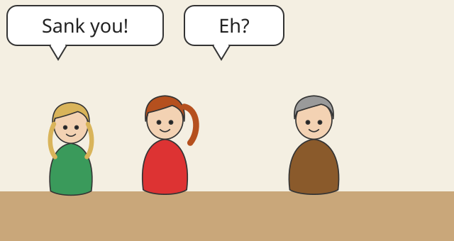
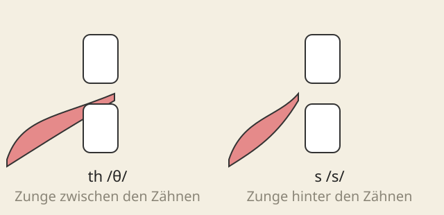

th, w, v und r
Mit einem KI-Tutor lernen
Ein KI-Tutor erklärt dir diese Seite und hilft dir bei den Aufgaben. Wähl deinen Assistenten:
Mit Claude öffnen Mit ChatGPT öffnen Mit Mistral Vibe öffnen
Du nutzt dein eigenes Konto beim Anbieter. Der Assistent ist kein Angebot von lernapps.net: lernapps liefert nur Inhalte und Aufgaben. Die Wahl gilt für alle Seiten, nur auf diesem Gerät.
Sophie sagt Sank you

Von links: Sophie (Zöpfe), Ellie (roter Pferdeschwanz) und rechts Mr Hill (graue Haare).
Quelle: eigene Zeichnung. Lizenz: CC-BY-4.0.Sophie bedankt sich bei Ellie: „Sank you!“ In Hello, Millbrook! hat sie „fenk ju“ gelernt. Das war eine Hilfe für den Anfang, aber nicht genau. Heute spricht Sophie das th wie ein s, und Ellie wundert sich.
Aufgabe
Lösung
Zwischen den Zähnen. richtige Antwort
Die Zungenspitze liegt leicht zwischen den oberen und unteren Zähnen. Die Luft strömt vorbei.
Hinter den oberen Zähnen, wie bei s.
So klingt sank. Das ist ein s und kein th.
Die Unterlippe berührt die oberen Zähne.
So klingt fank. Das ist ein f und kein th.
Beim th liegt die Zunge zwischen den Zähnen. Es klingt weder wie s noch wie f.
Das kannst du danach: Du kannst th, w, v und r üben und von ähnlichen Lauten unterscheiden.
Wo die Zunge und die Lippen liegen
Der Laut th hat zwei Formen: /θ/ in thank klingt hauchig, /ð/ in the klingt weicher. Beide sprichst du mit der Zunge zwischen den Zähnen.

Links th: Die Zungenspitze liegt zwischen den Zähnen. Rechts s: Sie liegt dahinter.
Quelle: eigene Zeichnung. Lizenz: CC-BY-4.0.| Zeichen | Beispielwort | So sprichst du es |
|---|---|---|
| /θ/ | thank | Zunge zwischen den Zähnen, hauchig |
| /ð/ | the | Zunge zwischen den Zähnen, weich |
| /w/ | west | Lippen rund, kein Zahnkontakt |
| /v/ | van | obere Zähne auf der Unterlippe |
| /r/ | red | Zungenspitze nach hinten, nicht rollen |
Merke
- th klingt nicht wie s, f oder d.
- w und v sind zwei verschiedene Laute: Bei w sind die Lippen rund, bei v berühren die Zähne die Lippe.
- Das englische r rollst du nicht und sprichst es nicht hinten im Hals.
Aufgabe
Höre vier Sätze und sprich sie nach. In jedem steckt ein Wort aus der Tabelle: thank, the, west, red.
Tipp
Die Aufnahme ist eine KI-Stimme und spricht manchmal unscharf. Frag im Zweifel deine Lehrkraft.
- They thank the teacher today.KI
- Sophie looks at the blue sky again.KI
- Amir lives in the west of the village.KI
- Peter has a red ball upstairs.KI
Zum Aufnehmen braucht diese Aufgabe JavaScript. Die Beispiele kannst du auch ohne anhören.
Lösung
- They thank the teacher today.
- Sophie looks at the blue sky again.
- Amir lives in the west of the village.
- Peter has a red ball upstairs.
Übung
Aufgabe
Lösung
Richtige Antwort: /θ/ – three; /ð/ – mother; /w/ – window; /v/ – very; /r/ – rain
Das th in three klingt hauchig, das th in mother weicher.
Aufgabe
Lösung
thin richtige Antwort
Das Zeichen /θ/ ist das th, und /n/ steht am Ende. Das Wort thin heißt „dünn“.
this
This beginnt mit dem weichen /ð/ und endet auf /s/. Hier steht /θ/ und am Ende /n/.
thing
Thing endet auf /ŋ/. Hier steht am Ende /n/.
Das Zeichen θ steht für th. Das Wort heißt thin.
Aufgabe
Lösung
/v/ richtige Antwort
Das v in village sprichst du mit den Zähnen auf der Unterlippe.
/w/
Das w sprichst du mit runden Lippen. Das ist der Laut in west.
/f/
Das v in Vater klingt wie f. Im Englischen ist v ein eigener, weicher Laut.
Das englische v ist weich und ein eigener Laut.
Aufgabe
Schreibe das Wort, das in Lautschrift steht.
Tipp
Welches Wort kennst du? Beachte das erste Zeichen.
- /θɪŋk/
- /ðæt/
- /wɪʃ/
Lösung
- think
- that
- wish
Aufgabe
Höre zu und schreibe jeden Satz ganz auf.
Tipp
Der Satz sagt dir, welches Wort gemeint ist. Höre den Satz so oft, wie du willst.
- KI
- KI
- KI
Lösung
- Sophie thinks about the party tomorrow.
- Amir waits for the bus every morning.
- Amir visits his uncle every Sunday.
Sprich nach
Aufgabe
Höre den Satz und nimm dich auf. Höre dich an und bewerte dich selbst. Die App hört nicht zu.
Tipp
Achte darauf, wo deine Zunge und deine Lippen liegen.
- Mother thinks the weather is lovely today.KI
- Three brothers wait at the window.KI
- Ellie drives the van slowly.KI
Zum Aufnehmen braucht diese Aufgabe JavaScript. Die Beispiele kannst du auch ohne anhören.
Lösung
- Mother thinks the weather is lovely today.
- Three brothers wait at the window.
- Ellie drives the van slowly.
Wie es weitergeht
Sophie sagt noch einmal: „Thank you!“ Diesmal versteht Ellie sie sofort. Mr Hill sagt: „Jetzt hört genau auf das Ende der Wörter.“ Das hörst du auf der nächsten Seite.